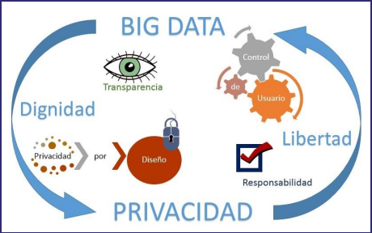

Semana 11
FECHA
01/06/22
HORA
4:00-6:00 P.m
INTERNET DE LAS COSAS
EL ORIGEN
En 1990, Simon Hackett y John Romkey crearon una tostadora con conexión a Internet por TCP/IP, y que controlada remotamente por el protocolo (SNMP MIB) permitía a través de cualquier ordenador encenderla o apagarla, así como determinar el tiempo de tostado.
¿QUÉ ES Y QUÉ NOS OFRECE EXACTAMENTE EL INTERNET DE LAS COSAS?
Es una red global de información y comunicación en donde todos los objetos que nos rodean se encuentran identificados y conectados permanentemente a Internet y que gracias a la fuente de datos que proporcionan sensores y actuadores embebidos, permiten la captura, almacenamiento y gestión de toda la información emitida por dichos objetos con el propósito de automatizar actividades y procesos diarios en nuestra vida cotidiana, así como la de analizar toda los datos generados aportándonos información útil que nos ayude a la correcta toma de decisión frente las situaciones que se nos presentan diariamente.
LA LOT Y EL BIG DATA
. Big Data hace referencia al control, gestión y análisis de gigantes cantidades de datos que no pueden ser analizados de forma tradicional y las herramientas usadas para dicho análisis.
. El objetivo del Big Data es poder convertir toda esta información en datos relevantes para la toma de decisiones.
APLICACIONES
1)Smart Home.
2)Smart City.
3)Agricultura Inteligente.